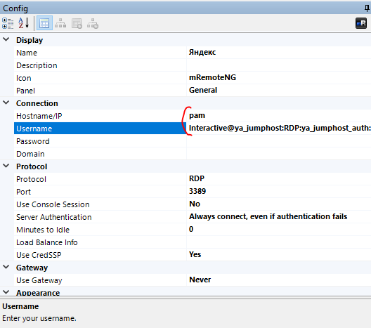
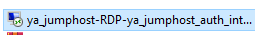
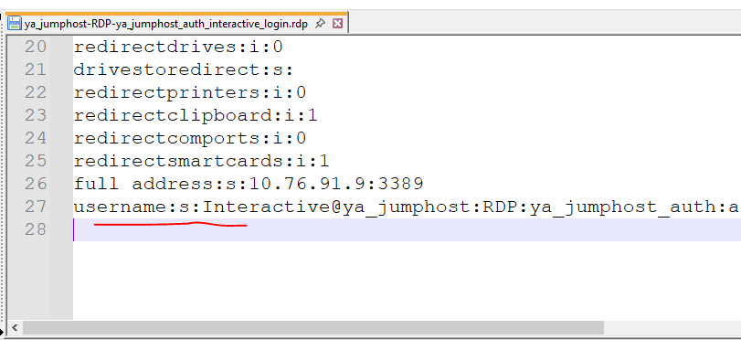

Создайте админский аккаунт ADM/ADX
Для входа на виртуальные машины нужен административный аккаунт и доступ в корпоративный PAM через 2FA.
В ИТ Портале откройте каталог сервисов → раздел «Доступ» и оформите заявку «Создание нового административного аккаунта».
- Заявка создаёт новую административную (ADM/ADX) учётную запись
- Админская УЗ должна быть в домене CORP
- Дождитесь подтверждения от IT Service Desk

Смените пароль админской учётки
Когда аккаунт появится, нужно сменить пароль. Инструкция часто приходит письмом от IT Service Desk.
Если на админской УЗ стоит временный пароль, смените его через Citrix:
https://sfmskvdi.corp.vtbcapital.internal/Citrix/VTBCWeb/
Запросите доступ админской УЗ в PAM
После появления админской учётки её ещё нужно добавить в PAM. Этот шаг часто пропускают — без него войти в систему контроля доступов нельзя.
Войдите в PAM и настройте 2FA
PAM — система контроля доступов внутри компании («Система контроля действий поставщиков услуг» / SKDPU).
В Яндекс Браузере наберите pam — откроется внутренняя страница.
Либо зайдите напрямую на шлюз 10.76.91.9.
- Введите админский логин и уже изменённый пароль
- На первом входе появится QR-код для двухфакторной аутентификации
- Добавьте QR в Avanpost Authenticator или Google Authenticator
Инструкция по 2FA: Confluence // pageId=274588947


Запросите учётку на самой Яндекс ВМ
После входа через PAM система снова спросит логин и пароль — уже
на виртуальную машину Яндекс (ya_jumphost).

Подключитесь: RDP-ярлык или mRemoteNG
После настройки PAM и учётки на ВМ доступны два канала связи.
Channel A — RDP shortcut
После входа в PAM скачайте ярлык подключения (или используйте пример «ВМ Яндекс 1»). Введите админский логин, пароль и код 2FA.
- Цель:
Interactive@ya_jumphost:RDP:ya_jumphost_auth - Логин: ваш
adm_... - Пароль: админский пароль + код 2FA
adm_... на свой — либо скопируйте строку username:s:...
для mRemoteNG.
Channel B — mRemoteNG
Клиент: mRemoteNG v1.76.20
В параметрах подключения задайте Hostname/IP и Username (как на скрине ниже).
- Hostname/IP:
pam - Username: полная строка из PAM-ярлыка (см. ниже)
- Protocol: RDP · Port: 3389

Откуда взять строку Username: после входа в PAM скачайте ярлык подключения,
откройте его в Блокноте и скопируйте значение после username:s:.


Interactive@ya_jumphost:RDP:ya_jumphost_auth:adm_ВашЛогин
pam.
В Username — полная строка из ярлыка, а не просто adm_....
В самом .rdp также видно full address:s:10.76.91.9:3389.

Все hold points пройдены — вы на ВМ
ADM в CORP → пароль → доступ в PAM у Донского → 2FA → учётка на ВМ у Сторожука → RDP или mRemoteNG.